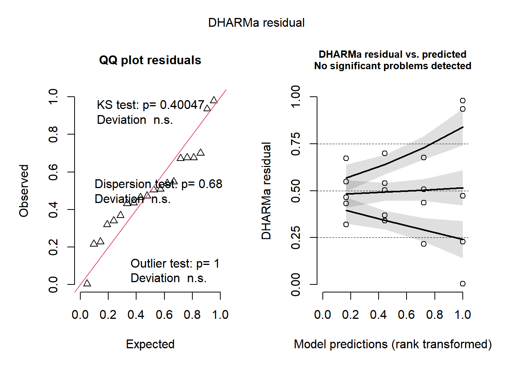
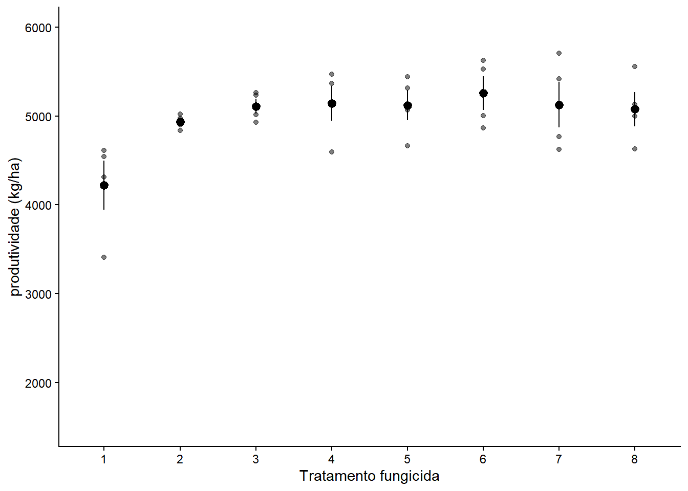
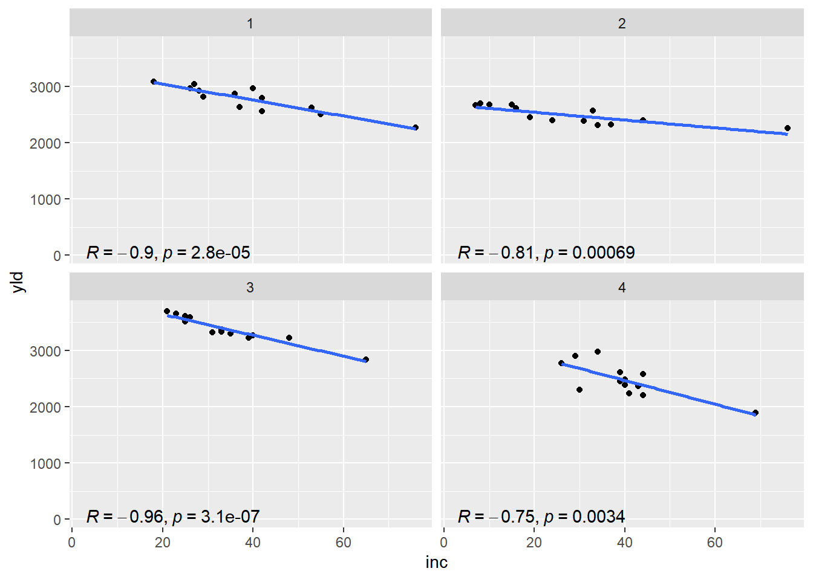
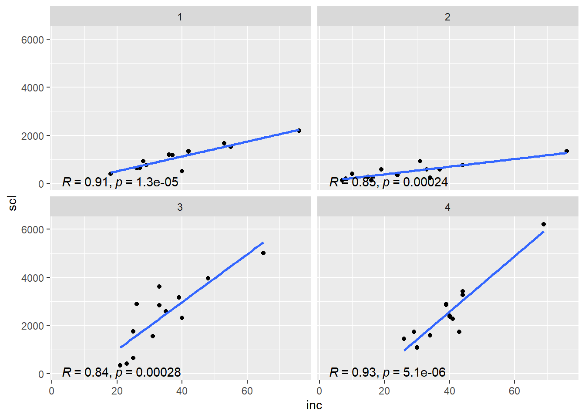
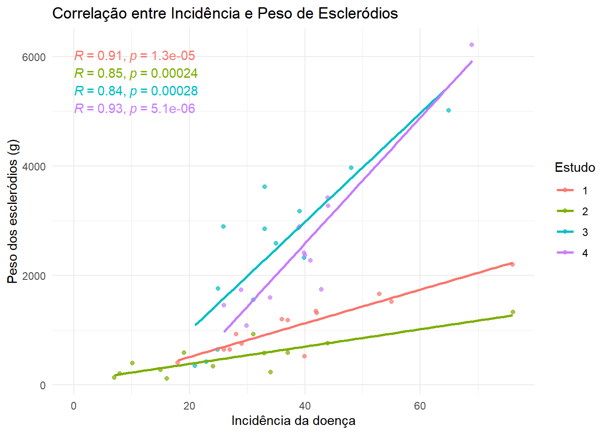

Aula6: Análise Fatorial, Blocos Casualizados e Correlação
Carregar o conjunto de dados
Nesta seção inicial, vamos importar nossos dados sobre fungicidas em vasos.
Dica estatística: Se o seu experimento tiver apenas 2 níveis de um fator quantitativo (ex: apenas duas doses diferentes), você pode tratá-lo como um fator qualitativo (categórico), pois não há um gradiente de quantidade suficiente para ajustar uma curva contínua.
library(readxl)library(tidyverse)
── Attaching core tidyverse packages ──────────────────────── tidyverse 2.0.0 ──
✔ dplyr 1.1.4 ✔ readr 2.1.5
✔ forcats 1.0.0 ✔ stringr 1.5.1
✔ ggplot2 4.0.2 ✔ tibble 3.3.0
✔ lubridate 1.9.4 ✔ tidyr 1.3.1
✔ purrr 1.2.1
── Conflicts ────────────────────────────────────────── tidyverse_conflicts() ──
✖ dplyr::filter() masks stats::filter()
✖ dplyr::lag() masks stats::lag()
ℹ Use the conflicted package (<http://conflicted.r-lib.org/>) to force all conflicts to become errors
Antes de modelar, sempre exploramos os dados visualmente. Aqui usamos facet_wrap para dividir os gráficos pela dose e interaction.plot para inspecionar graficamente se as linhas de tendência se cruzam ou não, o que indica uma possível interação entre o fungicida e a dose.
library(ggplot2)fungicidas2 |>mutate(dose =factor(dose)) |>ggplot(aes(treat, severity, color = dose))+geom_jitter(width=0.1)+facet_wrap(~dose)+theme(legend.position ="none")
Podemos testar o efeito de cada fator isoladamente (modelos m1 e m2), mas em um experimento fatorial o ideal é testar a interação entre eles (m3).
# Modelo apenas para o tratamento (fungicida)m1 <-lm(severity ~ treat, data = fungicidas2)anova(m1)
Analysis of Variance Table
Response: severity
Df Sum Sq Mean Sq F value Pr(>F)
treat 1 0.11323 0.11323 9.8892 0.005603 **
Residuals 18 0.20610 0.01145
---
Signif. codes: 0 '***' 0.001 '**' 0.01 '*' 0.05 '.' 0.1 ' ' 1
# Modelo apenas para a dosem2 <-lm(severity ~ dose, data = fungicidas2)anova(m2)
Analysis of Variance Table
Response: severity
Df Sum Sq Mean Sq F value Pr(>F)
dose 1 0.073683 0.073683 5.3991 0.03206 *
Residuals 18 0.245649 0.013647
---
Signif. codes: 0 '***' 0.001 '**' 0.01 '*' 0.05 '.' 0.1 ' ' 1
# Modelo Fatorial (Tratamento x Dose)m3 <-lm(severity ~ treat*dose, data = fungicidas2)
Análise de Variância (ANOVA) Fatorial
Na criação do modelo m3, a expressão treat*dose informa ao modelo linear para analisar não só o efeito principal do tratamento e o efeito principal da dose, mas também a interação entre eles (treat:dose). A interação nos diz se o efeito do tratamento (fungicida) depende da dose aplicada, sendo fundamental verificar sua significância no quadro da ANOVA.
O pacote DHARMa é usado para avaliar a qualidade do modelo simulando os resíduos e checando problemas de distribuição, dispersão e outliers.
library(DHARMa)
This is DHARMa 0.4.7. For overview type '?DHARMa'. For recent changes, type news(package = 'DHARMa')
plot(simulateResiduals(m3))

Médias Marginais Estimadas e Comparações
Vamos estimar as médias considerando a interação (treat|dose), que calcula a média do tratamento dentro de cada nível de dose. Depois, aplicamos o teste de comparações múltiplas para obter as letras indicativas de diferença estatística.
library(emmeans)
Welcome to emmeans.
Caution: You lose important information if you filter this package's results.
See '? untidy'
library(multcomp)
Carregando pacotes exigidos: mvtnorm
Carregando pacotes exigidos: survival
Carregando pacotes exigidos: TH.data
Carregando pacotes exigidos: MASS
Anexando pacote: 'MASS'
O seguinte objeto é mascarado por 'package:dplyr':
select
Anexando pacote: 'TH.data'
O seguinte objeto é mascarado por 'package:MASS':
geyser
dose = 0.5:
treat emmean SE df lower.CL upper.CL .group
Tebuconazole 0.0210 0.0273 16 -0.03690 0.0789 a
Ionic liquid 0.2921 0.0273 16 0.23420 0.3500 b
dose = 2:
treat emmean SE df lower.CL upper.CL .group
Tebuconazole 0.0202 0.0273 16 -0.03768 0.0781 a
Ionic liquid 0.0501 0.0273 16 -0.00781 0.1080 a
Confidence level used: 0.95
significance level used: alpha = 0.05
NOTE: If two or more means share the same grouping symbol,
then we cannot show them to be different.
But we also did not show them to be the same.
cld(medias2_m3, Letters=letters)
dose = 0.5:
treat emmean SE df lower.CL upper.CL .group
Tebuconazole 0.0210 0.0273 16 -0.03690 0.0789 a
Ionic liquid 0.2921 0.0273 16 0.23420 0.3500 b
dose = 2:
treat emmean SE df lower.CL upper.CL .group
Tebuconazole 0.0202 0.0273 16 -0.03768 0.0781 a
Ionic liquid 0.0501 0.0273 16 -0.00781 0.1080 a
Confidence level used: 0.95
significance level used: alpha = 0.05
NOTE: If two or more means share the same grouping symbol,
then we cannot show them to be different.
But we also did not show them to be the same.
Representação em Tabelas e Gráficos
Se a interação for significativa, montamos uma tabela de dupla entrada, comparando as colunas e as linhas (geralmente com letras maiúsculas e minúsculas). Se a interação não for significativa, o ideal é fazer gráficos de barra isolados para o efeito principal do fungicida e outro para a dose.
Exemplo de tabela de interação:
Table 1: Tabela 1: Médias estimadas e comparação de grupos. Médias seguidas de erro padrão (± SE). Letras minúsculas comparam tratamentos dentro de cada dose (coluna) e letras maiúsculas comparam doses dentro de cada tratamento (linha). Médias com a mesma letra não diferem entre si pelo teste de Tukey (p > 0,05).
Tratamento
Dose 0.5
Dose 2.0
Ionic liquid
0.29 ± 0.03 aA
0.05 ± 0.03 aB
Tebuconazole
0.02 ± 0.03 bA
0.02 ± 0.03 aA
Produtividade no Campo
Vamos importar agora um conjunto de dados medidos a campo, que sofre influência da heterogeneidade natural do ambiente.
No summary function supplied, defaulting to `mean_se()`

Modelo de ANOVA em Blocos Casualizados (DBC)
O Delineamento em Blocos Casualizados (DBC) é utilizado quando há heterogeneidade conhecida na área experimental (por exemplo, um gradiente de fertilidade, sombreamento ou umidade no campo). O fator bloco é introduzido no modelo para isolar essa variação e reduzir o erro experimental (“ruído” dos dados), aumentando a precisão na comparação dos tratamentos.
m_bloco <-lm(prod ~ trat + bloco, data= campo2)m_bloco
trat emmean SE df lower.CL upper.CL .group
1 4219 201 21 3800 4638 A
2 4935 201 21 4516 5354 AB
8 5078 201 21 4659 5497 AB
3 5110 201 21 4691 5529 AB
5 5122 201 21 4703 5541 AB
7 5128 201 21 4709 5546 AB
4 5140 201 21 4722 5559 AB
6 5256 201 21 4838 5675 B
Results are averaged over the levels of: bloco
Confidence level used: 0.95
P value adjustment: tukey method for comparing a family of 8 estimates
significance level used: alpha = 0.05
NOTE: If two or more means share the same grouping symbol,
then we cannot show them to be different.
But we also did not show them to be the same.
Gráfico com Médias e Intervalo de Confiança
Abaixo, extraímos o resultado das letras (cld) e criamos um gráfico que sobrepõe os dados brutos (geom_jitter), as barras de intervalo de confiança (geom_errorbar), as médias estimadas pelo modelo (geom_point) e finalmente as letras de significância (geom_text). Removemos espaços em branco gerados pelo cld usando a função trimws.
Nesta seção, exploraremos a associação linear entre variáveis como Incidência (inc), Produtividade (yld) e Peso de Escleródios (scl). O pacote ggpubr nos permite incluir automaticamente a estatística de correlação direto no gráfico através do stat_cor.
mofo <-read_excel("dados_diversos.xlsx", "mofo")library(ggpubr)# Visualização de Incidência vs Produtividade (Yield)mofo |>ggplot(aes(inc, yld))+geom_point(width=0.1)+geom_smooth(method="lm", se=F)+stat_cor(method ="pearson", label.x =3, label.y =30)+facet_wrap(~study)
Warning in geom_point(width = 0.1): Ignoring unknown parameters: `width`
`geom_smooth()` using formula = 'y ~ x'

# Visualização de Incidência vs Peso de Escleródiosmofo |>ggplot(aes(inc, scl))+geom_point(width=0.1)+geom_smooth(method="lm", se=F)+stat_cor(method ="pearson", label.x =3, label.y =30)+facet_wrap(~study)
Warning in geom_point(width = 0.1): Ignoring unknown parameters: `width`
`geom_smooth()` using formula = 'y ~ x'

Gráfico Unificado com Herança de Estética
Podemos unificar diferentes estudos no mesmo painel gráfico mapeando a cor para o fator study. O detalhe interessante do pacote ggplot2 em conjunto com ggpubr é que a função stat_cor herda essa subdivisão de cor e calcula a correlação independentemente para cada grupo sem que precisemos configurar do zero.
library(ggplot2)library(ggpubr)mofo |>ggplot(aes(inc, scl, color =factor(study))) +geom_jitter(width =0.1, alpha =0.7) +geom_smooth(method ="lm", se =FALSE) +stat_cor(method ="pearson", label.x =0, show.legend =FALSE) +labs(x ="Incidência da doença",y ="Peso dos escleródios (g)", color ="Estudo",title ="Correlação entre Incidência e Peso de Escleródios") +theme_minimal()
`geom_smooth()` using formula = 'y ~ x'

Coeficiente de Correlação de Pearson
O Coeficiente de Correlação de Pearson mede a força e a direção da relação linear entre duas variáveis quantitativas contínuas. * Variação: Varia de -1 (correlação negativa perfeita) a 1 (correlação positiva perfeita). * Significância: O p-valor associado ao teste avalia se a correlação observada na amostra é significativamente diferente de zero.
# Correlação de todos os estudos agrupados (cuidado: pode ignorar o efeito do local)cor.test(mofo$inc, mofo$yld, method="pearson")
Pearson's product-moment correlation
data: mofo$inc and mofo$yld
t = -2.9274, df = 50, p-value = 0.005133
alternative hypothesis: true correlation is not equal to 0
95 percent confidence interval:
-0.5934601 -0.1223842
sample estimates:
cor
-0.3825092
# Apenas calcula o valor (r), sem fornecer p-valor ou intervalo de confiançacor(mofo$inc, mofo$yld, method="pearson")
[1] -0.3825092
# Abordagem correta: calcular a correlação separadamente por estudomofo2 <- mofo |>group_by(study) |>summarise(correlacao=cor (inc,yld), method="pearson")summary(mofo2)
study correlacao method
Min. :1.00 Min. :-0.9567 Length:4
1st Qu.:1.75 1st Qu.:-0.9141 Class :character
Median :2.50 Median :-0.8574 Mode :character
Mean :2.50 Mean :-0.8546
3rd Qu.:3.25 3rd Qu.:-0.7979
Max. :4.00 Max. :-0.7468
Histograma e Distribuição de Frequências
Por último, avaliamos o formato da distribuição univariada. O peso de escleródios (scl) muitas vezes sofre assimetria e pode precisar de transformação logarítmica.